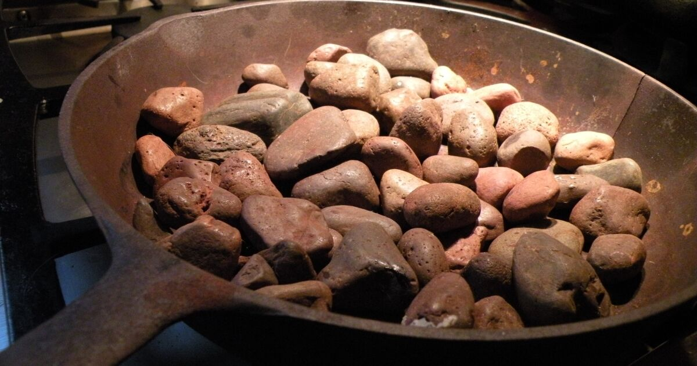

<!DOCTYPE html>
<html lang="en">
<head>
    <meta charset="UTF-8">
    <meta http-equiv="X-UA-Compatible" content="IE=edge">
    <meta name="viewport" content="width=device-width, initial-scale=1.0">
    <title>Grilled Rocks and Cheese/title>
</head>
<body>
    <h1>Grilled Rocks and Cheese</h1>
    
    <p>This is a holiday favorite of ours! Grilled Rocks and Cheese has become a staple in our house. Simple recipe that takes only a few minutes to get this together.</p>

    <h3>Grilled Rocks and Cheese Ingredients</h3>
    <ul>
        <li>Rocks from the garden, grass or woods will work</li>
        <li>American Cheese</li>
        <li>Your favorite bread</li>
    </ul>

    <h3>Grilled Rocks and Cheese Directions</h3>
    <ol>
        <li>Turn on your stovetop burner to medium heat</li>
        <li>Grease a pan</li>
        <li>Heat up the rocks first(around 10 minutes), you want them nice and hot, we will let them cool off a little bit before eating</li>
        <li>Remove rocks off stovetop, add in bread</li>
        <li>Place cheese on top of bread</li>
        <li>Remove bread and cheese</li>
        <li>Layer bread and cheese with rocks</li>
        <li>Close up the sandwich, and enjoy!</li>
    </ol>

<a href="../index.html">Homepage</a> | <a href="buffchicken.html">Buffalo Chicken></a> | <a href="Dog Food"></a>
</body>
</html>